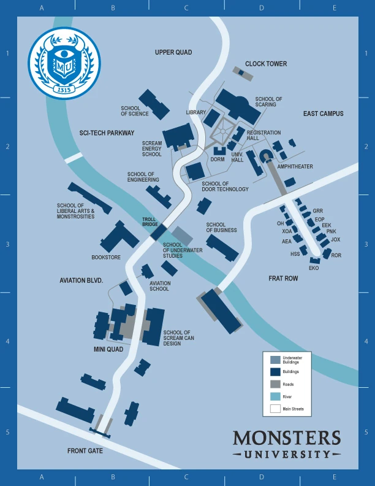

Background History
Monsters University, located in the suburban heart of Monstropolis, stands as one of the oldest and most prestigious institutions in the monster world. Founded in 1313, the university was originally established as a small academy dedicated to the study of scream science—the art and technique of harnessing the energy produced by children’s screams to power the monster world.
Over the centuries, it has grown into a sprawling public, land-grant university, serving as a cornerstone of higher education and innovation for generations of monsters. Throughout its 712-year history, Monsters University has expanded far beyond its humble beginnings. It now encompasses nine distinguished schools, each dedicated to a unique area of monstrous scholarship—from the School of Scaring, renowned for producing some of the greatest scarers in Monstropolis history, to the School of Engineering, School of Business, and School of Liberal Roars, which encourage a wide range of intellectual and creative pursuits.
Schools of Study
- School of Engineering
- School of Liberal Arts and Monstrosities
- School of Science
- School of Business
- School of Aquatics
- School of Scream Can Design
- Scream Energy School
- Aviation School
- School of Door Technology
Our Mission
For over seven centuries, Monsters University has stood at the forefront of monster education, shaping the leaders, innovators, and visionaries who define the very fabric of our world. Today, we continue this proud legacy by fostering a community of ambitious monsters from every corner of Monstropolis and beyond—individuals united by a shared commitment to excellence, discovery, and the pursuit of their fullest potential.
Map of Campus
Below is a map of Monsters University
